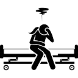
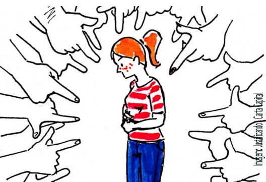
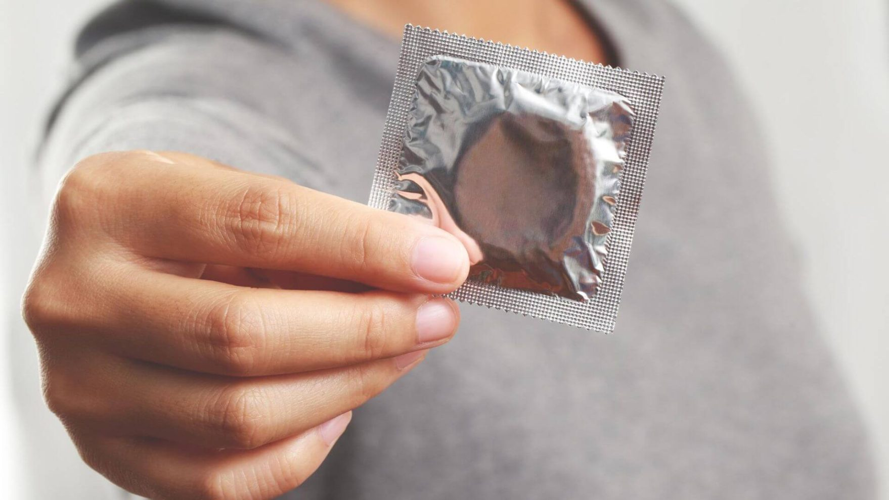
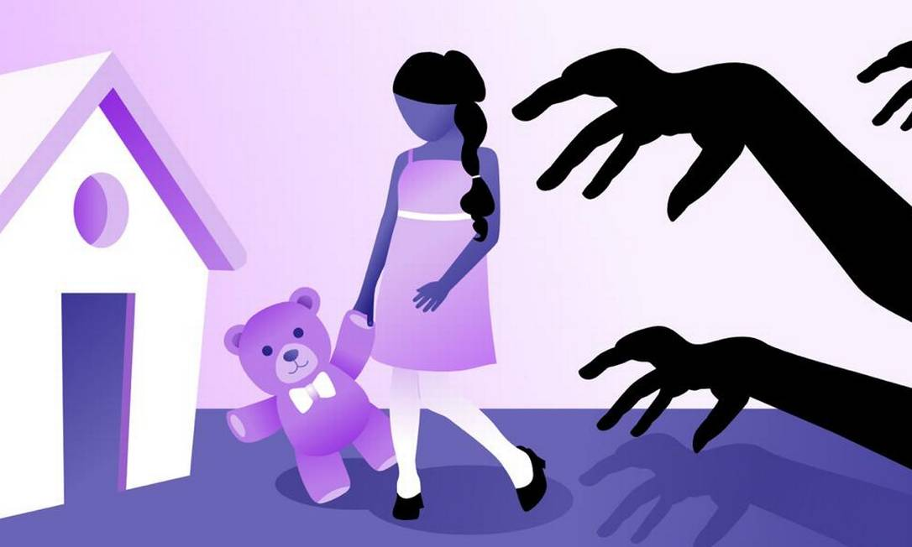
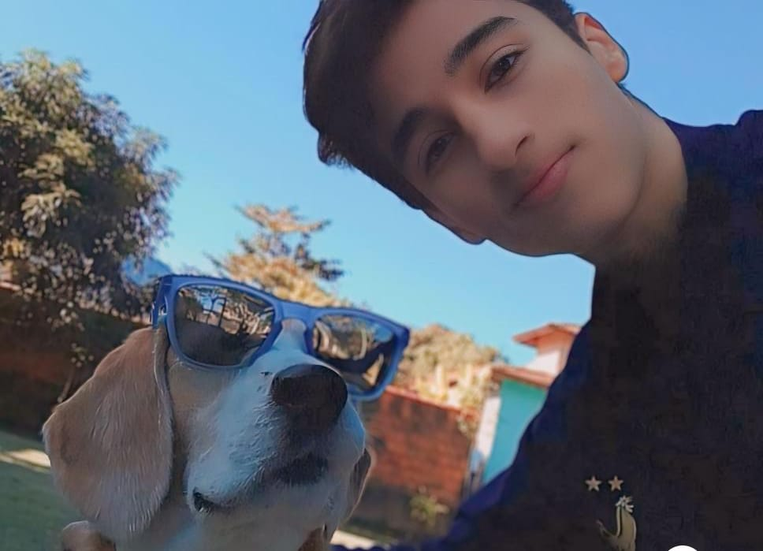
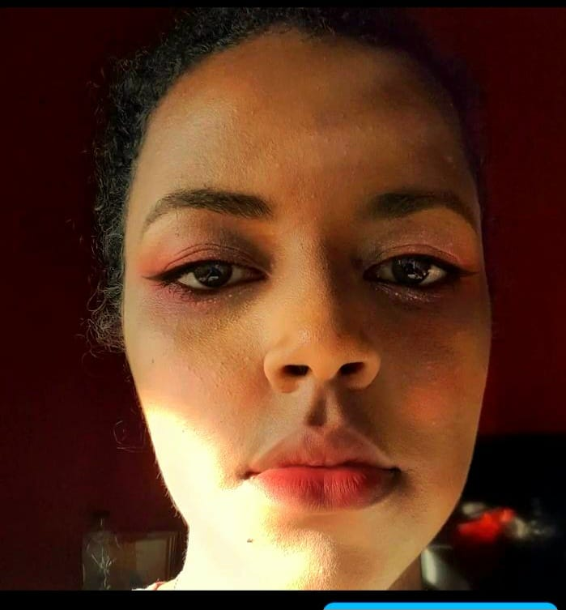
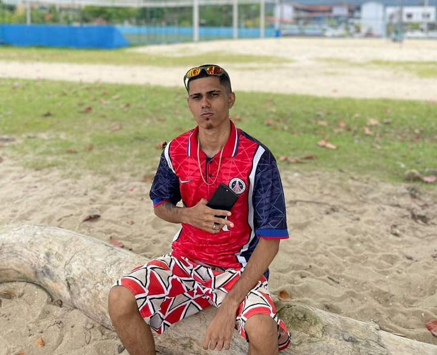
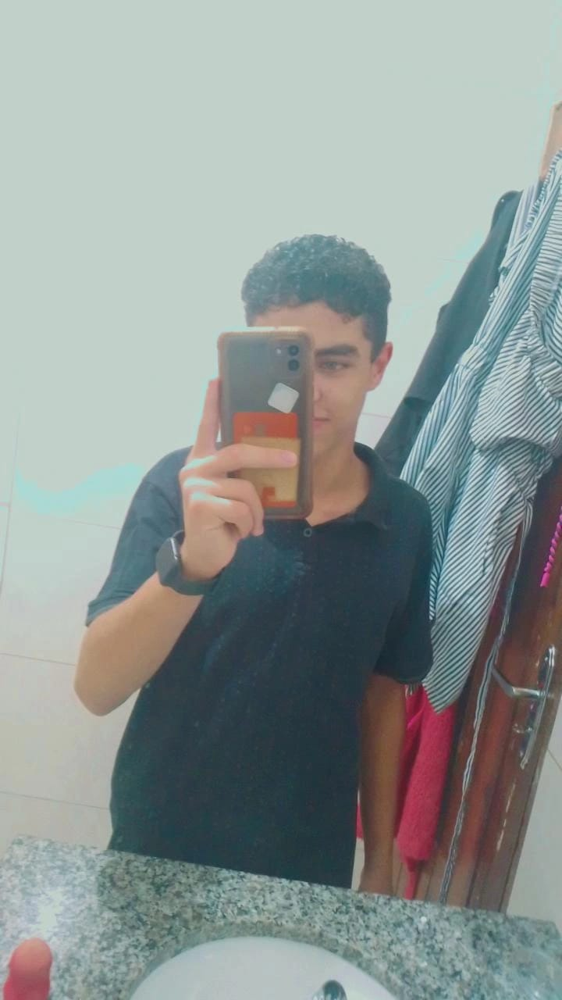

Sinta-se a vontade para pesquisar tudo que você precisa saber
sobre o
aborto.
ACFM recorre de suspensão de norma para manter proibição de aborto em casos de estupro
Abortos nos EUA atingem nível mais alto em mais de uma década
Ministério da Saúde recua após suspender nota sobre o aborto legal
Você sabe o que é o aborto?
O penalista Heleno Cláudio Fragoso (1986)
ensina que “o aborto consiste na interrupção da gravidez
com a morte do feto”. O aborto pode ser natural, acidental,
criminoso, legal ou permitido.
O aborto natural não é crime e ocorre quando há uma interrupção
espontânea da gravidez.
VOCÊ SABIA?
No Brasil, o aborto é legalizado em 3 situações:
.Se a gravidez é decorrente de estupro
.Se a gravidez representar risco de vida à mulher
.Se for caso de anencefalia fetal (não formação do cérebro do feto)

Quem deve oferecer esse serviço?
Qualquer hospital que ofereça serviços de ginecologia e obstetrícia deve ter equipamento adequado e equipe
treinada para realizar aborto legal.
Entretanto, muitos serviços ainda se recusam a realizar o aborto legal. Veja abaixo um mapa com os
estabelecimentos do SUS que oferecem o procedimento.
Valorize a sua saúde

Complicações de Saúde:
O aborto, especialmente quando realizado em
condições inadequadas ou ilegais, pode estar associado a complicações de saúde para a mulher.
Isso inclui infecções, hemorragias, lesões uterinas e complicações psicológicas, entre outras. A
legalização do aborto e o acesso a serviços de saúde seguros podem ajudar a reduzir esses
riscos.

Acesso a Serviços de Saúde Reprodutiva:
O tema do aborto está ligado ao acesso das mulheres aos serviços de saúde reprodutiva, incluindo
aconselhamento pré e pós-aborto, contracepção, exames de saúde e acompanhamento médico. O acesso
adequado a esses serviços é fundamental para proteger a saúde das mulheres.

Direitos Reprodutivos:
O debate sobre o aborto muitas vezes envolve questões relacionadas aos direitos reprodutivos das
mulheres. Isso inclui o direito de tomar decisões informadas sobre sua própria saúde
reprodutiva, o direito à autonomia corporal e o acesso igualitário a serviços de saúde
reprodutiva, independentemente da situação socioeconômica ou geográfica. Esses direitos são
fundamentais para garantir a saúde e o bem-estar das mulheres.
Sobre nós
Sobre o blog e seus criadores:
Bem-vindo ao blog "Vida e Escolha", um espaço virtual dedicado a explorar o tema
sensível e
complexo do aborto com compaixão, discernimento e honestidade. Fundado por uma equipe
diversificada e
comprometida, nosso blog nasceu da convicção de que o diálogo aberto e respeitoso é essencial
para
promover uma compreensão mais profunda sobre essa questão crucial.
Missão
Nossa missão no "Vida e Escolha é criar um espaço inclusivo onde as experiências,
perspectivas
e preocupações de todas as pessoas afetadas
pelo aborto possam ser compartilhadas e respeitadas. Reconhecemos que o aborto é um assunto
complero,
permeado por questões éticas, religiosas, politicas
e sociais, e estamos comprometidos em abordá-lo
de maneira aberta e compassiva.
Acreditamos que o dialogo construtivo é fundamental para avançar na compreensão mútua e na
busca por
soluções que respeiteti a autonomia dignidade de cada individuo. Queremos desafiar estigmas,
desconstruir preconceitos e promover um ambiente de apoio e solidariedade para aqueles que
enfrentam
decisões difíceis relacionadas à gravidez indesejada.
Nossos Criadores

Victor
Victor
Olá, sou Victor de Pádua. Tenho 16 anos e sou estudante do IF de Caraguatatuba.
Kauã
Kauã
Olá, sou Kaua Viera. Tenho 18 anos e sou estudante do IF de Caraguatatuba.

Aline
Aline
Olá, sou Aline Victoria. Tenho 21 anos e sou estudante do IF de Caraguatatuba.

Ivan
Ivan
Olá, sou Ivan. Tenho 20 anos e sou estudante do IF de Caraguatatuba.
Isaac
Isaac
Olá, sou Isaac. Tenho 16 anos e sou estudante do IF de Caraguatatuba.

Raick
Raick
Olá, sou Raick Staine. Tenho 18 anos e sou estudante do IF de Caraguatatuba.

.png)